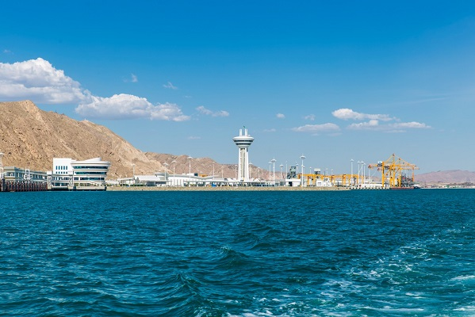
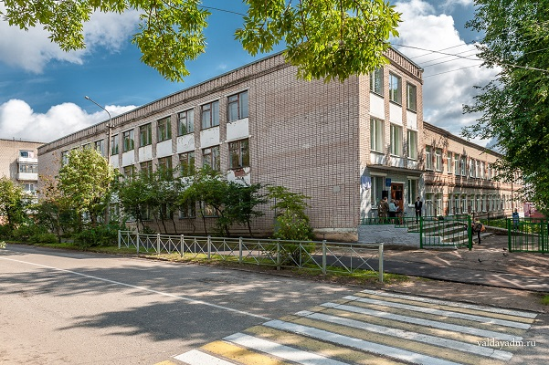
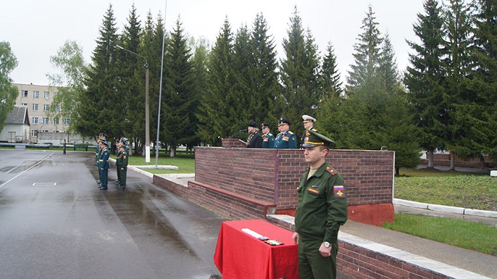
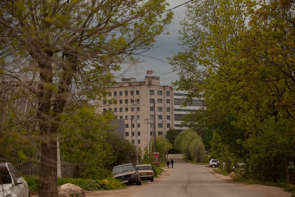
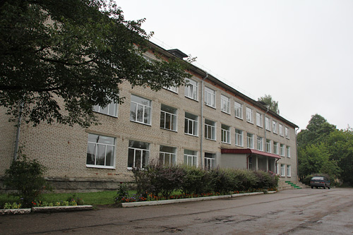

И так, Я родился в городе Туркменбаши в Туркменистане. Это город на восточном берегу Каспийского моря, раньше Моя семья жила там, но после распада СССР пришлось покинуть Туркменистан. На этот момент мне был один год, так что этот период жизни я не помню от слова совсем.
Когда Мне был один год Мы с семьёй переехали в Россию, а именно в Валдай, в небольшой городок в Новгородсокой области. Я живу здесь до сих пор.
В 2001 году Я пошёл учиться в Валдайскую школу им. Аверина, где учился 9 классов.
Затем, в 2010 году, после окончания школы Я поступил в "Колледж сервиса и управления", всё в том же Валдае, по специальности повар-кондитер.
В 2013 году Я закончил учёбу и пошёл в армию. Не самый лучший период в Моей жизни, но по крайней мере есть что вспомнить. Служил Я в РВСН, в 28-й гвардейской ракетной Краснознамённой дивизии, что в городе Козельск (Калужская область).
После возвращения из армии Я работал 2 года в Валдайской пожарной части (ПЧ-11)
Затем Я 3 года отработал на заводе "Юпитер", который в настоящее производит коллиматорные прицелы.
И наконец с 2019 по настоящее время Я служу во ФСИН, в Валдайской исправительной колонии №4.
Также сейчас Я заочно учусь в Валдайском аграрном техникуме по специальности юрист.
В настоящее время Я знаю не так много, но многому хочу научиться. На уровне новичка Я освоил html/css, немного научился работать с GitHub, начинал изучать php. В дальнейшем хочу стать frontend-разработчиком.